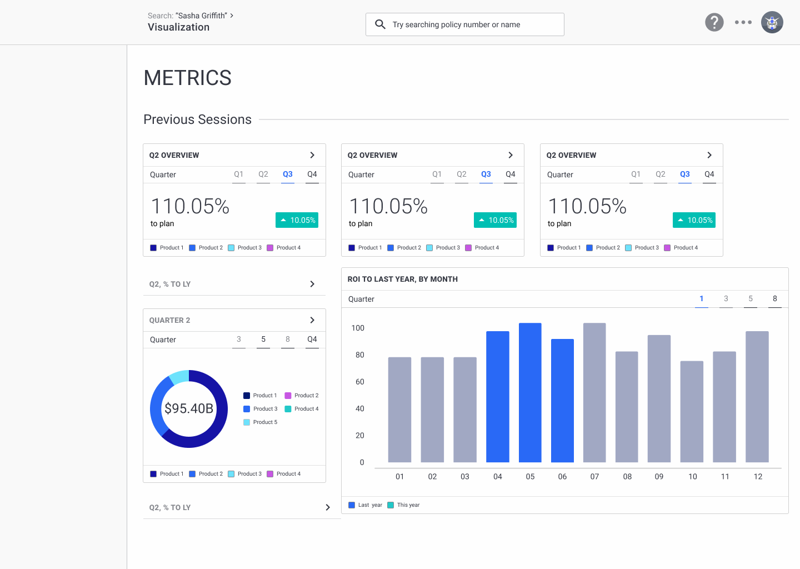
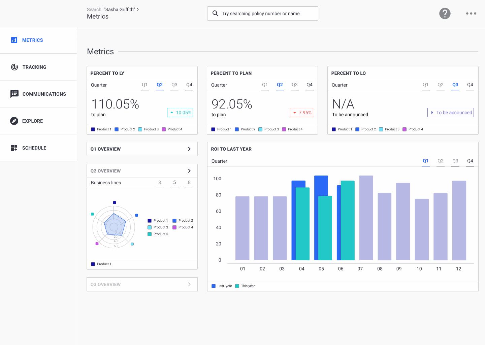

Dashboard Design
Dashboards need to show the big picture, while allowing users the freedom to hone in on a specific elements. Dashboards rely on visual consistency and thoughtful information architecture to tell a story about the business.
 Kevin Towner•3 minute read
Kevin Towner•3 minute read
Breakdown
Timeframe:
- • 9.18 - Ongoing
- • 1 week
Role:
- • UI Designer
- • Product Designer
Case Study:
- • HTML
- • CSS
Tools:
- • Figma
Introduction
Purpose
While doing some work on my website I realized my hosted projects involving visual design elements were for the most part designs of mobile applications. I chose a dashboard design because of recent opportunities as well as the challenge of, not only presenting data but, using data to tell a story.
The Approach
I approached the dashboard with the goal of designing something built for long lasting success. I wanted to design an interface that would be suitable for a variety of layouts, using flexible components, with a heavy emphasis on utilizing informed constraints. Components should respond gracefully, horizontally and vertically.

Overview
Problem Statement
It's difficult trying to pinpoint where to begin designing a product when research-related resources are scarce or time is limited. Dashboards should tell users a story, while maintaining high degrees of structure and consistency, to promomte the multiple layers of information available to the users.
Google Analytics & Qualtrics
A popular product among Google's marketing platform, Google Analyics offers a variety of data visualizations to reference for the dashboard, as well as layout and formatting information. Qualtrics was another dashboard I referenced for structure , data visualization, and functionalities.
Constraints
- • Time - Since this project was prepared for the event of a possible interviewi in the near relevant future, time for conducting thorough research and creating a deep design system are compromised.
- • Scope - The exact goals or metrics of success for this project are somewhat ambiguous as this is a theoretical dashboard based heavily on designer assumptions and brainstormed experiences.
Brainstorming
Experience, dashboard, and company
Three broad topics which would have a direct impact on the final design mockup. I chose Experience, Dashboards, Company.
- • Experience - Past professional or work experiences
- • Dashboard - My experiences or assumed ideas about what a dashboard is
- • Company - High-level information about the company, team, or department the dashboard is for
Retail, management, and KPIs
Stringing subtopics, without matching any of the same colors togethor - KPIs was the subtopic most shared across the three topics, with retail and management as subtopics.
Retail KPIs
Past experience
Reflecting on the days when I worked in retail management, I decided to use inspiration from prior experiences analyzing store and district KPIs as the primary metrics visualized for the user.
KPIs
Being that replicating a product for something I have limited experience in is an extremely time consuming task, I am going to focus less on the actual products the KPIs are mentioning and more on the KPIs themselves.
- • Percent to LY
- • Percent to plan
- • Percent to last quarter
UI Screens
First iteration
 First iterationSecond iteration
 Second iterationMain Components
Data visualization, Large
 Large data visualization components
Large data visualization components
Data visualization, small
 Small data visualization cards components
Small data visualization cards components